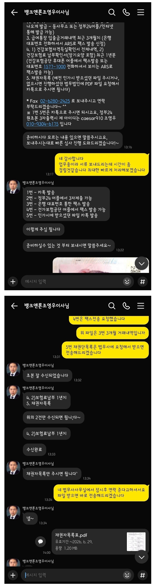
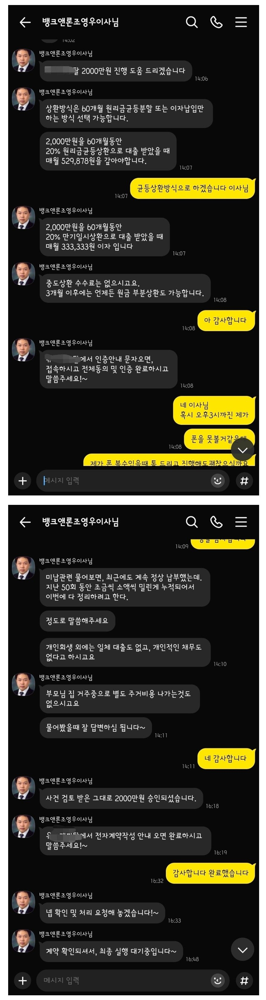
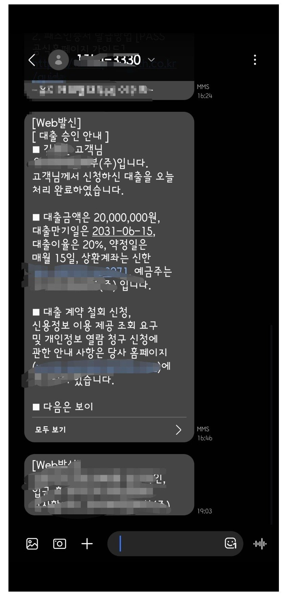

[개인회생자대출 ] 미납7.7회(1100만) 2000만원 승인받았습니다. 조영우이사님 감사합니다



회생미납금 1100만원 납입 조건으로
2천만원 승인 받았습니다.
조영우 이사님 감사합니다.
개인회생자/근로소득자/4대보험가입
재직기간 : 6년
세전연봉/실수령 월급여 : 4300만/월310만
변제회차 : 54/57회
매월변제금 : 140만원
미납회차 및 미납금 : 7.7회 1100만원
회생 후 기대출 없음.
개인회생 전후 제 개인사를 모두 말씀드리자면 책한권도 쓸 수 있습니다만, 뱅크앤론과 이번 대출을 도와주신
조영우이사님께 감사함을 표할 수 있는 방법이 대출후기를 남기는 것이기에 간략히 작성합니다.
36회차까지 미납금 없이 잘 납부하다가, 집안사정으로 1회, 2회 미납이 생기고,
3회 이상 미납이 생기지 않게 투잡까지 뛰며 변제금납부했지만 결국 54회차 막바지에 미납 7.7회, 1100만원이 쌓이고 말았습니다.
지난 주 법무사사무실로부터 폐지예정통보를 받고 눈앞이 깜깜했습니다. 솔직히 3회 미만으로 미납을 유지해야하는 건
알고있었지만 3.5회, 4회, 5회 점점 미납이 쌓여도 법원에서 아무 연락도, 채권자들로부터 변제금입금요청도 오지 않았기에 무감각해졌고 결국 7.7회까지 미납이 쌓일때까지 어떠한 조치도 취하지 못했습니다.
퇴직금 중도인출도 불가능하고, 지인 가족들에게 도움을 요청할 수 없었기에 폐지 후 채무조정까지 생각했습니다.
그 와중에도 대부대출은 절대 고려사항이 아니었습니다. 채무독촉에 시달렸던 기억, 대출심사를 받으며 힘들었던 기억들이 많았기에 대출을 받느니 폐지하고 워크아웃으로 가야겠다고 생각했습니다.
하지만 혹시나 하는 마음에 인터넷에서 검색했고 수많은 중개인들의 홍보 광고 글을 읽어보다 뱅크앤론 후기들을 읽어보게 되었고, 대표/이사님들의 글들에서 폐지를 막을 수 있겠다는 희망을 가질 수 있었습니다.
월요일 오전에 카톡을 통해 조영우이사님과 상담을 할 수 있었고,
아주 빠르고 쉽게 심사/대출승인을 받을 수 있었습니다.
조영우 이사님께서
필요한 서류 및 제출방법을 자세히 알려주시고
실시간으로 진행상황과 앞으로 진행될 상황을 설명해주시며
개인의 상황(미납이유, 통장내역 등등)에 맞게 심사에서 문제될 부분까지 체크해주시고 먼저 검토해주십니다.
이제까지 많은 대출을 받아봤고 많은 중개인들을 만나봤지만
뱅크앤론, 조영우이사님처럼 세밀하고 편리하고 신속하게 중개받은 건 처음입니다.
대부업 외 금융권도 중개해주시는지는 모르지만 면책 후 금융 대출 업무는 뱅크앤론과 조영우이사님께 의뢰하고 싶습니다.
https://cafe.naver.com/cityman88/311580